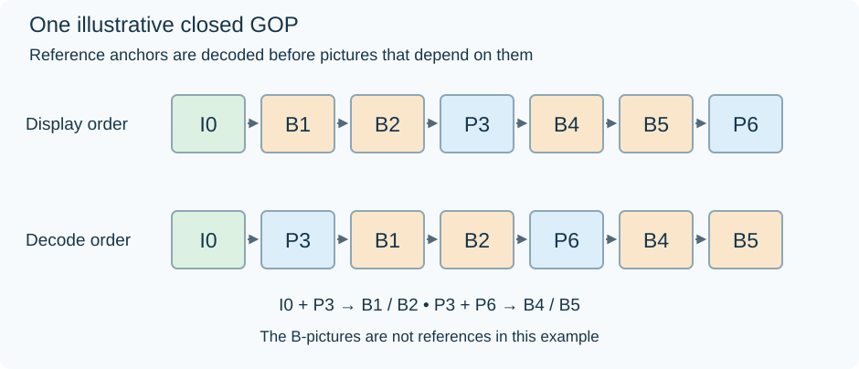

Groups of Pictures (GOPs)
A group of pictures describes a sequence of coded pictures and their prediction relationships around access points.
A group of pictures (GOP) is easiest to understand by following which decoded pictures other pictures use. The visible sequence below contains seven pictures:
I0, B1, B2, P3, B4, B5, P6.
In this example, I0 is intra-coded; P3 uses I0; P6 uses P3. B1 and B2 use I0 and P3, while B4 and B5 use P3 and P6.

Declared dependency example. Its B-pictures are not references. Other legal structures use different dependencies and orders.
Decode the anchors before the pictures that need them
The decoder can begin with I0. It creates that picture's samples and retains them as a reference.
Next it decodes P3, using I0 and P3's coded corrections. P3 appears later on screen, but it must exist before B1 or B2 can use its samples.
The decoder now has both anchors and can reconstruct B1 and B2. It can then present the initial sequence in viewing order: I0, B1, B2, P3.
The next anchor is P6. Decode it from P3, then use P3 and P6 to reconstruct B4 and B5. The remaining viewing order is B4, B5, P6.
One valid coded order is therefore:
I0, P3, B1, B2, P6, B4, B5.
Decoding follows dependencies. Display follows the picture timeline. The decoder needs picture storage to bridge those two orders.
What the letters tell you
| Letter in this example | How its samples are predicted |
|---|---|
| I | Within the picture, without another picture as a sample reference |
| P | From an available reference picture, with coded corrections |
| B | From the permitted reference choices, including the two anchors used here |
The letters describe coding possibilities and picture/slice types, not a universal lifecycle. A modern B-picture can itself become a reference. A picture can also mix prediction choices across its regions.
For example, a hierarchical structure might decode a B-picture between two distant anchors, then use that intermediate picture to predict other B-pictures. The dependency graph becomes deeper even if the visible I/P/B sequence looks similar. “B” therefore does not mean that the decoder can always discard it immediately.
References can outlive their display time
I0 can already have been shown when P3 and the early B-pictures use it. It remains in memory because prediction still needs it.
P3 may first be held because it was decoded ahead of display. After it has been displayed, it still remains a reference for P6, B4, and B5. Being displayed and being safe to release are separate events.
In this declared graph, I0 can cease being a reference after its last dependent picture is reconstructed. P3 lasts longer. These decisions affect the decoded picture buffer, while output reordering decides when each finished picture is shown.
GOP length in pictures and seconds
An encoder's maximum keyframe interval is often expressed as a picture count. At 24 fps, 48 pictures span two seconds. At 24000/1001 fps they span 2.002 seconds; at 60 fps they span 0.8 seconds.
The same picture count therefore gives different time spacing in different sources. Scene-change decisions can also create an entry earlier than the configured maximum.
More frequent independently usable pictures provide closer starting places for seeking or joining playback. Longer prediction runs can reuse more scene information before a reset. Their benefit depends on how well the scene remains predictable; a cut replaces much of that useful relationship.
Closed and open boundaries
A closed GOP can reconstruct its pictures without sample references from an earlier group. The illustrated seven-picture graph is closed because all its references are inside the group beginning at I0.
An open GOP allows dependencies across a nominal boundary. As a conceptual example, leading pictures displayed before a new intra anchor can use both that anchor and an older one from the preceding group. The new anchor is independent, but those leading pictures are not.
A random start needs the codec's rules for those relationships: which pictures can be reconstructed, which must be skipped, and where valid presentation begins. Starting continuously with the previous group already decoded is a different situation from starting with an empty reference buffer.
This is why access-point type matters alongside a GOP length. A run of “48 frames” does not by itself describe the boundary dependencies.
In an Emby seek or transcode start, the decoder reconstructs the required graph before it can deliver the requested pictures. Understanding that graph explains why picture order, access spacing, and reference storage work together.